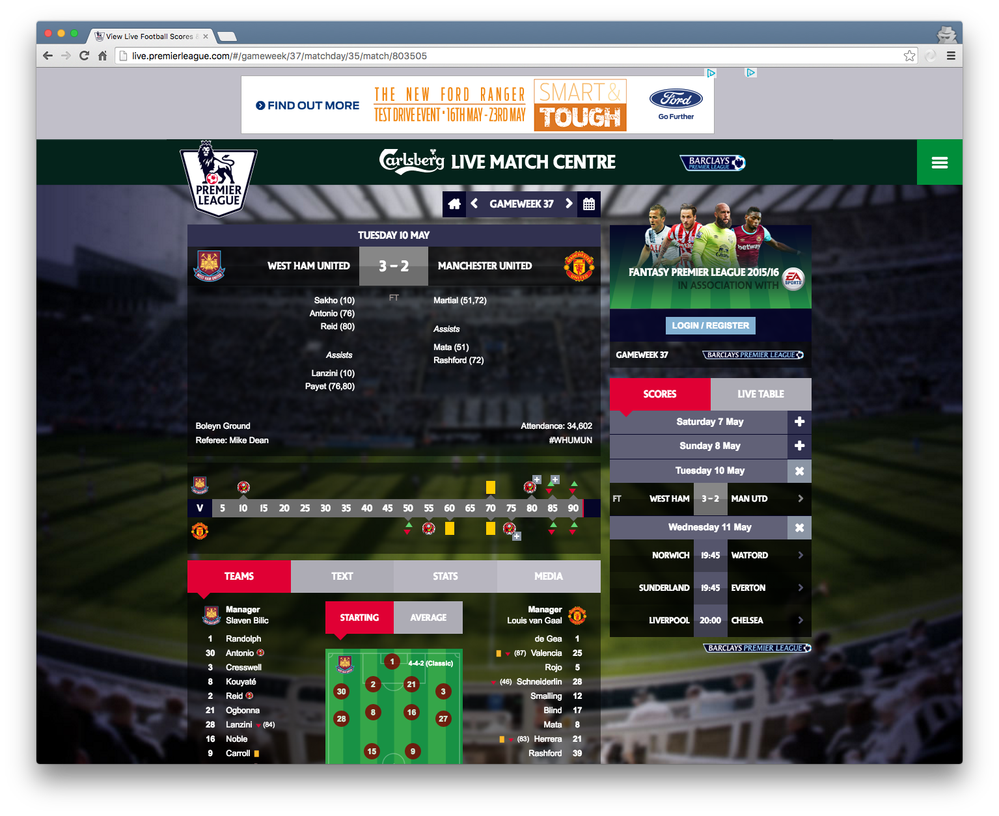
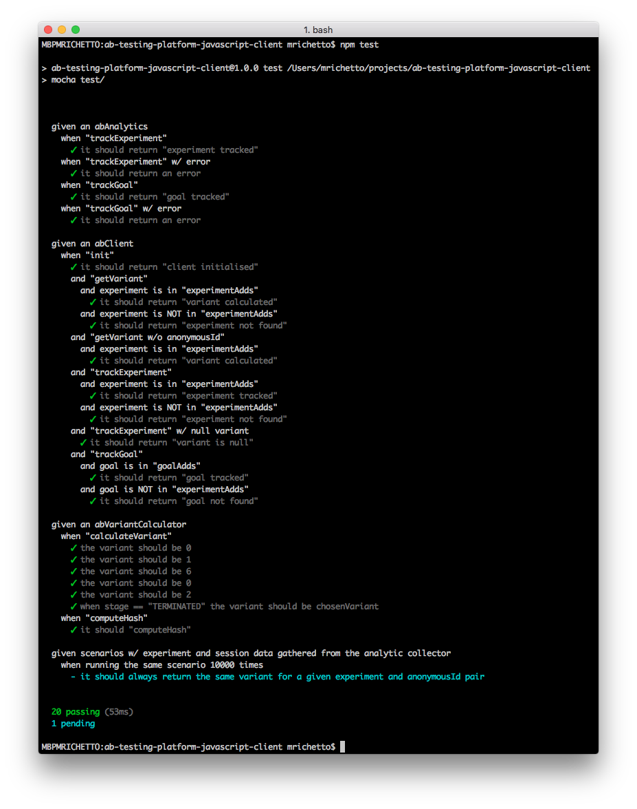
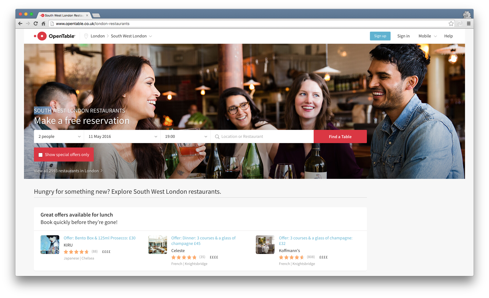

Title
Subtitle
@mattiaerreAgenda
- Who I am and what I do
- My story so far
- Node.js
- Demo(s)
- Takeaways
Who I am and what I do
- Mattia Richetto (@mattiaerre)
- I Live in London (since 2013)
- I work for
- I am a Sr. Software Engineer - Team lead
- I am an Agile developer
MSSF 1/X
TODO: add image
MSSF 2/X
JavaScript is the most commonly used programming language on earth. Even Back-End developers are more likely to use it than any other languageStack Overflow Developer Survey Results 2016
MSSF 3/X
- I hate(d) JavaScript
- You don't know what you hate (or the other way around)
- "if you can't beat them, join them"
MSSF 4/X
- deltatre (UK)
- BPL match centre (Summer/Autumn 2013) 
- H5VP (Spring 2014)
MSSF 5/X
- Aqueduct
- ManCity.com > Community > Cityzen giving project (Winter 2014)
- SiteCore API
- Node.js + Express
- MongoDB
- #dreamjob
MSSF 6/X
- Test first
- TDD
- Mocha
- Chai
- Sinon
MSSF 7/X
TODO: add ?!?
MSSF 8/X
Node.js 1/X
Node.js® is a JavaScript runtime built on Chrome's V8 JavaScript engine. Node.js uses an event-driven, non-blocking I/O model that makes it lightweight and efficient. Node.js' package ecosystem, npm, is the largest ecosystem of open source libraries in the world.
Node.js 2/X
- Threading
- V8
- Package management
- Unified API
- Event loop